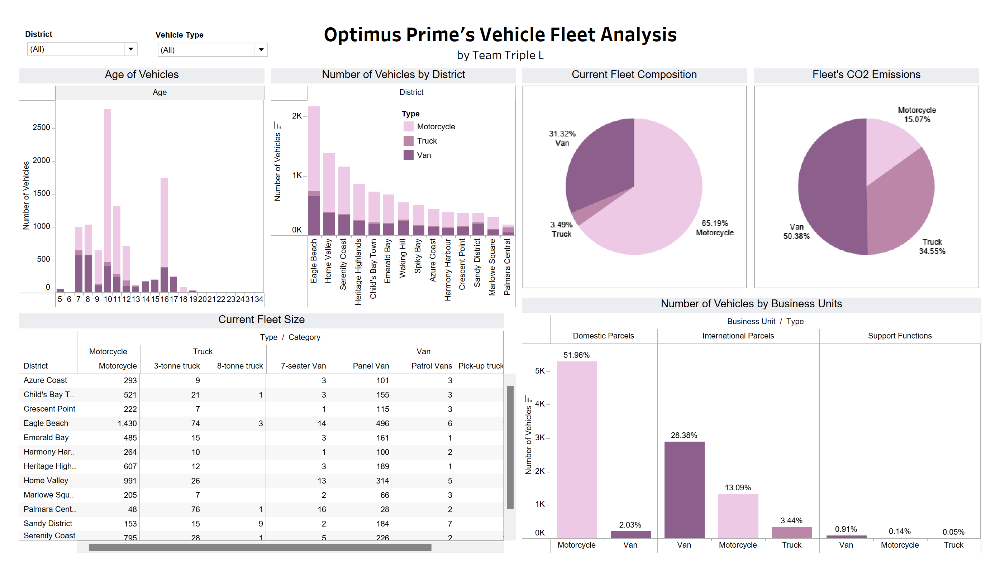

NTU BAC X Accenture Case Competition
1st Runner-Up, Issued by NTU Business Analytics Club and Accenture · Mar 2024
Team Triple L, emerging 1st Runner Up amongst 10 competing Finalist Teams.
Project Overview
In the NTU BAC X Accenture Case Competition, our team's dedication and innovative approach were recognized as we proudly emerged as the 1st Runner-Up. With a focus on sustainability and analytics, we embarked on a mission to revolutionize the last mile delivery sector, aiming to reduce carbon emissions and environmental impact. Through meticulous research and strategic planning, we developed a comprehensive roadmap towards achieving a Net Zero Goal, leveraging on technology and innovative strategies.
Road to Net Zero: Optimus Prime's Case Analysis
Case Analysis Dashboard
In this presentation, we will be working towards Optimus Prime's pledge to achieve net-zero emissions by 2050, underscoring the dedication to sustainability and environmental stewardship. Our detailed plan, encompassing Company Analysis, Current Carbon Baseline, Phased Decarbonisation Implementation Strategies, and Forward-Looking Innovations, is poised to steer Optimus Prime towards a cleaner, greener future.
Company Analysis
Our analysis covered several aspects:
- Current Fleet Size
- Districts Distribution
- Business Units
- Types of Vehicles
This was done through both excel and Tableau for Data Visualisation and Analysis.
Carbon Baseline
To understand the emissions, we analyzed historical data to estimate emission levels, comparing the carbon footprint between Internal Combustion Engines (ICE) and Electric Vehicles (EVs).
Our phased approach includes:
Decarbonisation Route Map
- Phase 1: Optimising Current Operations
- Phase 2: Transition to EVs
- Phase 3: Scaling and Optimisation
- Phase 4: Achieving the Net Zero Goal
Decarbonisation Roadmap: 1. Optimize Current Operations
Installing telematics can result in 15-20% fuel savings. We calculated the estimated fuel cost savings for each vehicle category per year, and decided to install telematics in vehicles based on their lifespan.
Decarbonisation Roadmap: 2. Transition to Electrification
When vehicles reach the end of their lifespan, instead of replacing them with new ICE vehicles, Optimus Prime will replace them with EVs. Telematics will be installed on new vehicles immediately to maximize savings.
Decarbonisation Roadmap: 3. Scale and Optimise
For the initial years, districts can tap on the local public infrastructure to power the electric vehicles. As the EV fleet increases, there are cost savings that can be realized by installing private charging infrastructures.
Decarbonisation Roadmap: 4. Net Zero Goal
By 2050, Optimus Prime's fleet is slated to be fully electric, with an efficient charging and scheduling system, contributing to the net-zero goal.